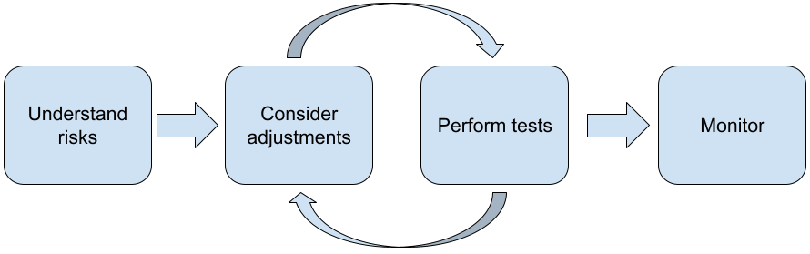

安全指导#
大型语言模型 (LLM) 之所以如此实用，部分原因在于它们是一种创造性工具，可以处理许多不同的语言任务。遗憾的是，这也意味着大型语言模型可以生成出乎您意料的输出，包括冒犯性、不敏感或与事实不符的文本。更重要的是，这些模型令人难以置信的多功能性也使得难以准确预测它们可能产生何种类型的不良输出。虽然 Gemini API 在设计时充分考虑了Googles AI 原则，但开发者要负责任地运用这些模型。为了帮助开发者打造安全、负责任的应用，Gemini API 提供了一些内置内容过滤功能，以及针对 4 个维度的可调整安全设置。如需了解详情，请参阅安全设置指南。
本文档旨在向您介绍使用 LLM 时可能出现的一些安全风险，并推荐新兴的安全设计和开发建议。（请注意，法律和法规也可能会施加一些限制，但此类考虑因素不在本指南的讨论范围内。）
使用 LLM 构建应用时，建议执行以下步骤：
了解应用的安全风险
考虑进行调整以降低安全风险
执行适合您的用例的安全测试
征求用户反馈并监控使用情况
调整和测试阶段应该是迭代的，直到达到适合您的应用的性能。

了解应用风险#
在这种情况下，安全性是指 LLM 避免对其用户造成伤害的能力，例如生成恶意言论或宣扬成见的内容。Gemini API 提供的模型在设计时充分考虑了Google 的 AI 原则，使用它时需遵守生成式 AI 使用限制政策。该 API 提供内置的安全过滤器，有助于解决一些常见的语言模型问题，例如恶意语言和仇恨言论，并力求实现包容性并避免成见。但是，每个应用可能会为其用户带来一组不同的风险。因此，作为应用所有者，您有责任了解用户及应用可能造成的潜在危害，并确保您的应用安全负责任地使用 LLM。
作为此评估的一部分，您应该考虑产生危害的可能性，并确定其严重性和缓解措施。例如，与生成虚构故事以娱乐为目的的应用相比，基于事实事件生成论文的应用在避免虚假信息方面需要更加谨慎。若要开始探索潜在安全风险，一种好方法是研究您的最终用户，以及可能会受应用结果影响的其他人员。您可以采用多种形式，包括研究应用领域中最先进的研究、观察人们如何使用类似应用，或者开展用户调查、问卷调查或与潜在客户进行非正式访谈。
高级提示
与目标人群中各种潜在用户讨论您的应用及其预期用途，以便更全面地了解潜在风险，并根据需要调整多- 性标准。
美国政府标准与技术研究院 (NIST) 发布的AI 风险管理框架为 AI 风险管理提供了更详细的指导和额- 的学习资源。
DeepMind 发布的关于语言模型伤害的道德和社会风险 的内容详细说明了语言模型应用可能造成伤害的方式。
考虑进行调整以降低安全风险#
现在您已经了解了风险，接下来可以决定如何缓解这些风险了。确定要优先考虑哪些风险以及您应该采取多少措施来尝试防范这些风险是一项关键决策，类似于对软件项目中的 bug 进行分类。确定优先级后，您可以开始考虑最合适的缓解措施类型。通常情况下，简单的更改就能带来改善并降低风险。
例如，在设计应用时，请考虑以下因素：
调整模型输出，以更好地反映应用上下文中可接受的内容。调整可以使模型的输出更具可预测性和一致性- 从而帮助降低某些风险。
提供一种能够提供更安全输出的输入法。您提供给 LLM 的确切输入可能会影响输出的质量。 不妨尝试- 过输入提示来找出在您的用例中最安全的内容，这是值得付出的努力，因为这样，您就可以提供有助于加- 操作的用户体验。例如，您可以限制用户只能从输入提示下拉列表中选择，或者提供弹出式建议以及您认- 可以在应用上下文中安全使用的描述性短语。-
在向用户显示不安全的输入之前屏蔽并过滤输出。在简单的情况下，屏蔽名单可用于识别和屏蔽提示或回复中的不安全字词或短语，或者要求人工审核者手动更改或屏蔽此类内容。
Tip
注意 ：根据静态列表自动进行屏蔽可能会产生意想不到的结果，例如定位到通常使用该屏蔽名单中的词汇的特定群组。
**使用经过训练的分类器标记每个提示，以标记潜在的危害或对抗性信号。**然后，您可以根据检测到的损害类型，采用不同的策略来处理请求。例如，如果输入在本质上明显具有对抗性或存在滥用行为，则可能会被屏蔽，并输出预先编写了脚本的回答。
高级提示
如果信号确定输出内容是有害的，应用可以采用以下选项：
提供错误消息或预先编写了脚本的输出。
请再次尝试该提示，以防生成备用安全输出，因为有时同一提示会产生不同的输出。
采取保护措施来防止故意滥用，例如为每个用户分配一个唯一 ID，以及对指定时间段内可提交的用户查询数量施加限制。另一种保护措施是尝试防范可能出现的提示注入。提示注入与 SQL 注入非常相似，可让恶意用户设计输入提示来操控模型的输出，例如发送输入提示来指示模型忽略前面的所有示例。如需详细了解故意滥用，请参阅生成式 AI 使用限制政策。
根据本质上较低的风险调整功能。 范围较小的任务（例如，从文本段落中提取关键字）或有较多人工监督的任务（例如，生成将经人工审核的短视频内容），通常具有较低的风险。例如，您可以在创建应用后，无需创建应用来从头开始撰写电子邮件回复，而可以将其限制为扩展大纲或建议其他措辞。
根据用例执行安全测试#
测试是构建可靠且安全应用的关键环节，但测试的程度、范围和策略各不相同。例如，与专为律师事务所设计的应用、用于总结法律文件和帮助起草合同的应用相比，休闲俳句诗生成器的风险可能不太严重。但俳句诗生成器可供更广泛的用户使用，这意味着对抗尝试甚至意外有害输入的可能性更大。具体实现环境也很重要。例如，与没有此类监督的相同应用相比，在采取任何行动之前，其输出经人类专家审核的应用可能被认为不太可能产生有害输出。
在确信自己已做好发布准备之前，反复反复进行更改和测试，这一点并不少见，即使是对于风险相对较低的应用也是如此。两种类型的测试对 AI 应用特别有用：
安全基准测试涉及到设计安全指标，以反映您的应用在可能使用方式的背景下可能不安全的方式，然后使用评估数据集测试应用在相关指标上的表现。建议您在进行测试之前考虑最低安全指标的可接受水平，以便 1) 您可以根据这些预期评估测试结果，并且 2) 您可以根据用于评估您最关注的指标的测试收集评估数据集。
高级提示
注意过度依赖“现成”的方法，因为您可能需要使用人工审核者构建自己的测试数据集，以完全契合您的应用的情境。
如果您有多个指标，则需要确定如果某项更改导致一个指标的改善而对另一个指标造成负面影响，那么如何权衡此变化。与其他性能工程一样，您可能希望关注评估集中最差性能的表现，而不是平均性能。
对抗性测试涉及主动尝试破坏您的应用。这样做的目的是找出不足之处，以便您采取适当的措施进行纠正。对抗性测试可能需要在应用领域具备专业知识的评估人员投入大量时间/精力，但您执行得越多，就越有可能发现问题，尤其是在极少数情况下或仅在重复运行应用后才发生的问题。
对抗性测试是一种系统性评估机器学习模型的方法，目的是了解在有恶意或无意间有害的输入时，模型的行为方式：
如果输入内容明显旨在产生不安全或有害的输出，则输入内容可能是恶意内容；例如，让文本生成模型针对特定宗教生成仇恨评论。
如果输入内容本身可能无害，但输入内容本身可能无害，输入内容就会造成有害输出；例如，要求文本生成模型描述特定种族的人并收到种族主义输出内容。
对抗性测试与标准评估的区别在于用于测试的数据构成。对于对抗性测试，请选择最有可能从模型中产生有问题的输出的测试数据。这意味着，检测模型的行为是否存在所有可能的危害，包括罕见或异常的样本以及与安全政策相关的极端情况。它还应包括句子不同维度（例如结构、含义和长度）的多样性。如需详细了解构建测试数据集时的注意事项，您可以参阅Google 的 Responsible AI 公平性做法。
高级提示
使用自动化测试来尝试破坏您的应用，而不是使用“红队”招募人员的传统方法。在自动化测试中，“red 团队”是另一种语言模型，该模型会发现会对被测模型产生有害输出的输入文本。
Tip
注意 ：众所周知，LLM 有时会针对同一输入提示生成不同的输出。可能需要进行多轮测试才能捕获更多有问题的输出。
监控问题#
无论您进行多少测试和缓解，都无法保证完美无缺，因此请提前规划如何发现和处理出现的问题。常见的方法包括设置一个受监控的渠道供用户提供反馈（例如，“顶”/“踩”评分）以及开展用户研究，以主动征求各类用户的反馈 - 如果使用模式与预期不同，这尤其有用。
高级提示
当用户为 AI 产品提供反馈时，它能够随着时间的推移而显著改善 AI 性能和用户体验，例如，帮助您选择更好的示例来调整提示。Google 的《人员与 AI 指南》中的“反馈和控制”一章重点介绍了在设计反馈机制时需要考虑的关键注意事项。